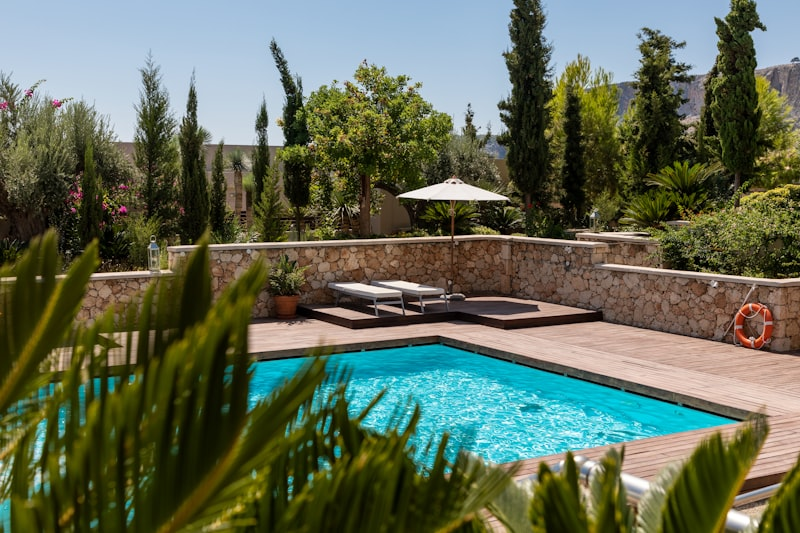

By SCWS Team
February 1, 2026 · 10 min read
The quote came back: $450 for a single water truck delivery. Four trucks to fill your pool means nearly $2,000 before you've even added chemicals. But there's 400 feet of perfectly good well water sitting right beneath your property. Could you just... use that instead?
The short answer is yes, absolutely—thousands of rural property owners fill their pools with well water every year, saving hundreds or thousands of dollars in the process. But there are important considerations about water chemistry, your well system's capacity, and preventing unsightly stains. Here's everything you need to know about using a well water pool successfully.
Can You Fill a Pool with Well Water?
Yes, you can fill a pool with well water, and for many rural property owners in areas like Ramona, Valley Center, Fallbrook, and Julian, it's the most practical option. Using your well water swimming pool saves significant money compared to water delivery—but it requires some planning to do it right.
The key differences between filling a pool with well water versus municipal water:
- Mineral content: Well water typically contains more iron, calcium, and other minerals that affect pool chemistry
- pH variations: Well water pH can be significantly higher or lower than ideal pool range (7.2-7.6)
- Flow rate limitations: You're limited by your well's GPM output and recovery rate
- No chlorine residual: Unlike city water, well water has no disinfectant—plan for immediate chemical treatment
With awareness of these factors and proper preparation, well water works perfectly fine for swimming pools. Let's dive into the details.
Water Chemistry Challenges with Well Water Pools
The biggest well water pool problems stem from minerals and pH imbalances. Before you start filling, get your water tested—ideally through a laboratory analysis or at minimum with a comprehensive home test kit.
Iron and Metals
Iron in well water is extremely common in San Diego County—and it's the #1 cause of pool staining problems. When iron-rich water meets chlorine, it oxidizes instantly and can turn your pool water green, brown, or orange and leave ugly stains on pool surfaces.
Iron levels to watch for:
- Below 0.1 ppm: Generally safe—no special treatment needed
- 0.1-0.3 ppm: Use a metal sequestrant when filling
- Above 0.3 ppm: Pre-treat water with a hose filter or settling tank
- Above 1.0 ppm: Strongly consider delivered water or extensive pre-treatment
Other metals that cause well water pool problems include manganese (black stains), copper (blue-green stains), and calcium (scale buildup). A comprehensive water test will reveal what you're dealing with.
pH Levels
Well water pH varies dramatically—we see readings from 5.5 to 9.0+ in our service area. Pools need pH between 7.2 and 7.6 for proper chlorine effectiveness and swimmer comfort.
- Low pH (acidic): Common in granite bedrock areas. Causes eye irritation and corrodes equipment. Raise with sodium carbonate (soda ash).
- High pH (alkaline): Common in limestone areas. Reduces chlorine effectiveness and causes cloudy water. Lower with muriatic acid or sodium bisulfate.
Plan to test and adjust pH multiple times during and after filling. Well water often requires more aggressive initial treatment than municipal water.
Hardness and Total Dissolved Solids (TDS)
Hard water is common in Southern California. High calcium hardness (above 400 ppm) leads to scale buildup on pool surfaces and equipment. TDS above 1,500 ppm can make water difficult to balance and may require partial draining over time.
Test for hardness before filling. If levels are very high, consider blending with delivered water to dilute mineral concentrations.
Impact on Your Well System
Filling a swimming pool puts significant demand on your well. A typical 15,000-gallon pool represents 2-3 weeks of normal household water usage—drawn in just a few days. Here's how to protect your well system:
Understanding Recovery Rate
Your well's recovery rate—how fast groundwater replenishes—determines how aggressively you can pump. Most residential wells in San Diego County recover between 2-10 gallons per minute. If you pump faster than recovery, you'll eventually draw the well down and start pulling air, sediment, or run dry entirely.
⚠️ Never Run Your Well Dry
Running a well pump with no water causes rapid overheating and pump failure. Even brief dry-running can damage seals and shorten pump life. If you see sputtering, air bubbles, or sudden sediment—stop pumping immediately and let the well recover.
The 50/50 Rule for Pool Filling
To protect your well system, follow the 50/50 rule: pump for a period, then rest for an equal period. This allows the aquifer to recover and prevents pump overheating.
- Strong wells (10+ GPM): Pump 4-6 hours, rest 4-6 hours
- Average wells (5-10 GPM): Pump 3-4 hours, rest 4-6 hours
- Weak wells (under 5 GPM): Pump 2-3 hours, rest 6-8 hours
If your well has a history of running low or pressure problems, be extra conservative. Consider supplementing with delivered water rather than stressing your system.
Pump Stress and Wear
Extended pumping accelerates wear on your well pump and motor. While modern pumps are designed for heavy use, filling a pool essentially puts months of wear on in days. Signs of pump stress include:
- Water temperature noticeably warmer than usual
- Cycling on and off more frequently
- Pump running constantly without building pressure
- Tripping circuit breakers
- New vibrations or noises from the well
If you notice these signs, pause filling and let everything cool down. Consider having your system inspected before continuing.

Pre-Treatment Before Filling
For well water with high mineral content, pre-treatment prevents most staining and chemistry problems. Here are your options:
💡 Metal Sequestrant First
Add your metal sequestrant to the pool BEFORE you start filling—not after. As water enters, the sequestrant immediately binds to dissolved iron and prevents oxidation. Adding it later means some iron has already stained your surfaces.
Inline Hose Filters
Hose-end filters attach to your garden hose and remove iron, sediment, and some minerals as water enters the pool. They're affordable ($30-$100) and effective for moderate contamination.
Pro tip: Use a filter designed for pools specifically—they have higher capacity than standard RV filters. Expect to replace cartridges every 2,000-5,000 gallons depending on your water quality.
Settling Method
For high iron content, some homeowners pump well water into a large holding tank or clean container first, let it sit for 24-48 hours to allow iron to oxidize and settle, then pump the clearer water into the pool (leaving sediment behind). This is labor-intensive but very effective.
Metal Sequestrants
Add a pool metal sequestrant (also called stain preventer) to your pool before filling begins. These products bind with dissolved metals and prevent them from oxidizing and staining surfaces. Continue adding sequestrant as directed during the filling process.
How Long Does It Take to Fill a Pool with Well Water?
Filling time depends on pool volume and your well's flow rate. Here's a quick reference based on gallons per minute (GPM):
| Pool Size (Gallons) | 5 GPM Well | 7 GPM Well | 10 GPM Well |
|---|---|---|---|
| 10,000 gallons | 33 hours | 24 hours | 17 hours |
| 15,000 gallons | 50 hours | 36 hours | 25 hours |
| 20,000 gallons | 67 hours | 48 hours | 33 hours |
| 30,000 gallons | 100 hours | 71 hours | 50 hours |
Important: These are continuous pumping times. With the recommended 50/50 rest cycles, actual calendar time doubles. A 15,000-gallon pool at 5 GPM takes about 4-5 days of intermittent filling.
Don't know your well's GPM? You can measure it with a 5-gallon bucket and stopwatch, or check your well report. We can also measure flow rate during a well inspection.
Ongoing Pool Maintenance with Well Water
🔄 Monthly Metal Maintenance
Add metal sequestrant every month, not just when you first fill. Every time you top off the pool with well water, you're adding more dissolved metals. Regular treatment keeps them in solution instead of on your pool surfaces.
After filling, well water swimming pool maintenance is similar to any pool—just with extra attention to metals and minerals:
- Use metal sequestrant regularly: Add monthly to keep dissolved metals in solution
- Monitor pH closely: Well water can shift pH more dramatically; test 2-3 times weekly
- Watch for staining: Address new stains immediately before they set
- Test metals periodically: Especially after topping off with well water
- Consider a pre-filter for makeup water: Ongoing evaporation loss needs replacement; filter it before adding
If you have extremely hard or mineral-rich water, you may need to partially drain and refill more frequently than pools filled with municipal water—every 3-5 years instead of 5-7 years.
Staining Prevention: Before, During, and After
Preventing stains is much easier than removing them. Here's your stain prevention timeline:
Before Filling
- Test well water for iron, copper, manganese, and hardness
- Purchase metal sequestrant and have it ready
- Get pre-filter cartridges if iron is above 0.3 ppm
During Filling
- Add initial dose of metal sequestrant before water reaches equipment level
- Run pool pump/filter if water level allows
- Add sequestrant doses as directed throughout filling
- Do NOT add chlorine until pool is full and sequestrant has circulated 24 hours
After Filling
- Circulate 24 hours before adding sanitizer
- Gradually add chlorine—avoid shocking immediately
- Test and balance all chemistry over 2-3 days
- Add maintenance dose of sequestrant monthly going forward

Cost Comparison: Well Water vs Water Delivery
One of the biggest advantages of filling a pool with well water is cost savings. Here's how the numbers compare for a 15,000-gallon pool:
| Expense | Well Water | Water Delivery |
|---|---|---|
| Water cost | $30-$75 (electricity) | $250-$500+ (3-5 loads) |
| Pre-filter/treatment | $30-$100 | $0 |
| Metal sequestrant | $25-$50 | $0-$25 |
| Extra chemicals | $20-$50 | $10-$20 |
| Total | $105-$275 | $260-$545 |
Well water typically costs 50-80% less than delivered water. The trade-off is time (days vs hours) and the effort of managing your well during filling. For most homeowners with adequate wells, the savings are well worth it.
Frequently Asked Questions
Can I fill my swimming pool with well water?
Yes, you can fill a swimming pool with well water. Thousands of homeowners do it successfully every year. However, there are important considerations: test your water first for iron, minerals, and pH levels; check your well's recovery rate to avoid running it dry; consider pre-treating the water if you have high iron or mineral content; and allow extra time for chemical balancing. With proper preparation, well water works perfectly fine for pools.
How long does it take to fill a pool with well water?
Filling time depends on your pool size and well flow rate. A typical well produces 5-10 GPM. At 5 GPM, a 15,000-gallon pool takes about 50 hours (over several days with rest periods). At 10 GPM, it takes around 25 hours. Important: Never run your well continuously—use the 50/50 rule (pump for 4 hours, rest for 4 hours) to protect your pump and allow aquifer recovery. Plan for 3-7 days total filling time for a typical residential pool.
Will well water stain my pool?
Well water can stain pools if it contains high iron, manganese, or copper levels. When iron-rich water meets chlorine, it oxidizes and can leave orange-brown stains on pool surfaces. To prevent staining: test your water before filling; use a metal sequestrant when filling; add stain and scale preventer; and treat iron above 0.3 ppm with a hose filter or pre-treatment. Existing stains can often be removed with specialized pool stain removers or mild acid treatments.
Is it cheaper to fill a pool with well water or have water delivered?
Well water is significantly cheaper—typically $30-$75 in electricity costs for a 15,000-gallon pool versus $200-$500+ for water delivery. However, factor in potential costs for pre-treatment filters ($30-$100), metal sequestrants ($25-$50), and extra pool chemicals for balancing ($20-$50). Even with these additions, well water usually costs 50-80% less than delivered water. The main trade-offs are time (well filling takes days vs hours for delivery) and the effort of managing your well during filling.
Can filling my pool damage my well?
Filling a pool can stress your well system if not done carefully. Running your pump continuously can cause overheating, premature wear, and aquifer depletion. Never pump continuously for more than 4-6 hours; allow equal rest time for recovery. Watch for warning signs like sputtering water, sediment, or air in lines—these indicate the well is struggling. If your well has a low recovery rate (under 3 GPM), consider supplementing with delivered water or filling over a longer period with more rest breaks.
Planning to Fill Your Pool This Season?
Before you start filling, make sure your well system is up to the task. We can test your water quality, measure your flow rate and recovery, and identify any issues that need attention before putting heavy demand on your well. Our well inspection and water testing services give you the information you need for a successful, stain-free pool fill.